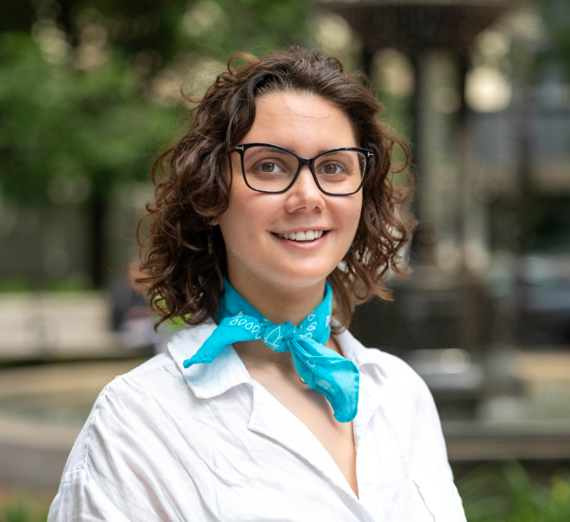

Hana Frluckaj, PhD
My research focuses on open source software communities, particularly in terms of sustainability, equity, and participation.
Leveraging qualitative and ethnographic methods, I explore the experiences of underrepresented developers: their career trajectories, participation within radical openness, and resistance to corporate exploitation.
I earned my Ph.D. in Information Studies from the University of Texas at Austin iSchool, advised by James Howison. Before that, I received my B.Sc. in Electrical and Computer Engineering from Carnegie Mellon University with a minor in Human-Computer Interaction.
At CMU’s CoEx Lab, I worked with Laura Dabbish and James Herbsleb on newcomer retention, gender differences in open source trajectories, and code-of-conduct governance.
Updates
- Spring 2026 — Starting as a Postdoctoral Fellow at UVA's DTD lab, mentored by Prof. David Nemer.
- April 2026 — Successfully defended my Ph.D. dissertation at UT Austin iSchool.
- 2024 — Published a first-author paper on trans experiences in OSS in CSCW 2024.
- 2022 — Published my first first-author paper on gendered OSS career trajectories in CSCW 2022.
- 2021 — Co-authored paper on code-of-conduct conversations in open source software accepted to CSCW 2021.
- August 2021 — Began Ph.D. studies at the University of Texas at Austin School of Information.
- May 2020 — Graduated from Carnegie Mellon University with a B.Sc. in Electrical and Computer Engineering.